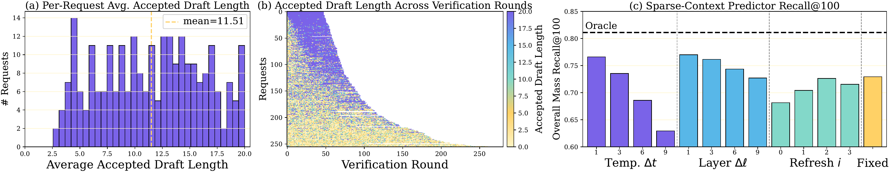
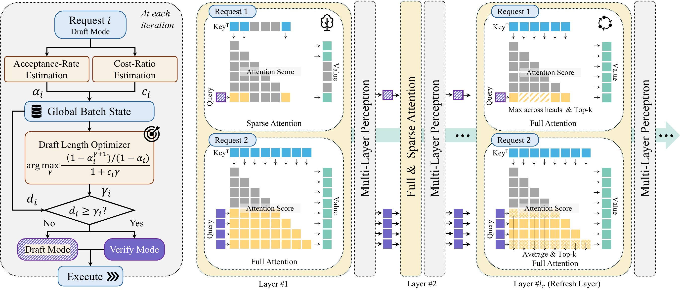
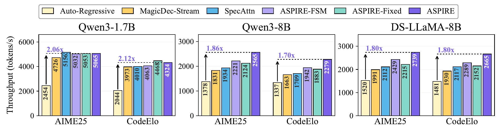
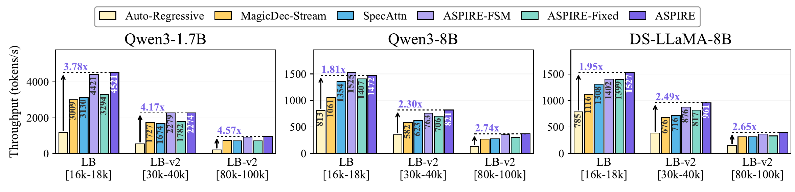
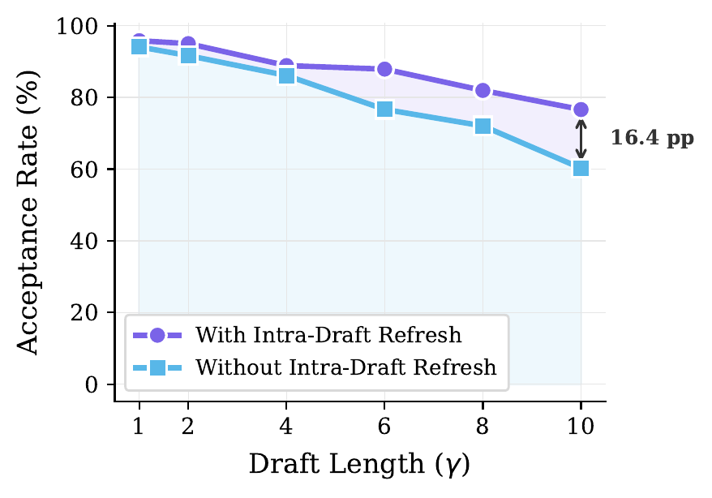
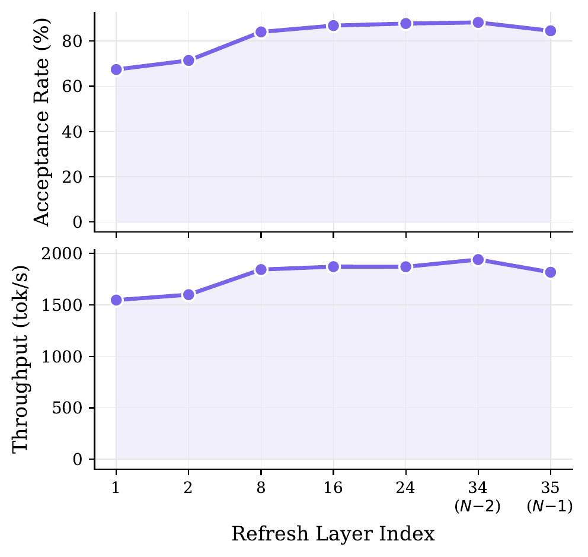

Long-context LLM inference, increasingly common in agentic and reasoning workloads, is bottlenecked by attention: repeated KV-cache reads make decoding memory-bound. Self-speculative decoding alleviates this by drafting tokens with sparse attention and verifying them with full attention, but existing batched methods remain synchronized: all requests in a batch share a single draft-verify schedule, even though the optimal draft length varies widely across requests and changes dynamically within each request. We propose ASPIRE, a non-synchronized batched self-speculative decoding framework built on three components. First, a unified mixed forward allows drafting and verifying requests to coexist in the same batched forward pass, removing the need for global draft-verify phases. Second, a lightweight online speculation scheduler uses per-request acceptance-rate estimates and a batch-aware cost model to let each request independently choose when to verify. Third, an intra-draft refresh layer performs full attention at a single designated layer during drafting, updating the sparse context at every draft step so that it does not become stale. Across three models and five reasoning and long-context benchmarks, ASPIRE achieves 1.70–4.58× decoding throughput over autoregressive baselines and consistently outperforms prior self-speculative methods.
In long-context decoding, every new token re-reads the request's full KV cache. Batching amortizes model weights in the MLP, but attention still reads each request's private cache, so decoding stays memory-bound as contexts grow. Self-speculative decoding helps by pairing cheap sparse-attention drafting with exact full-attention verification, reading the full cache once per verified block instead of once per token.


We evaluate on Qwen3-1.7B, Qwen3-8B, and DeepSeek-R1-Distill-Llama-8B across five workloads: AIME25 and CodeElo (short-context reasoning), LongBench [16k–18k], and LongBench-v2 [30k–40k] and [80k–100k] (long context). All experiments run on a single NVIDIA H100 NVL (94 GB) with paged KV (page size 16), sparsity ρ=7%, kmin=32 pages, L=8 recent pages, and the refresh layer at the second-to-last transformer layer. We report decode-only throughput at the largest batch that fits.


Averaged across all five workloads (Table 1 of the paper). ASPIRE-Fixed and ASPIRE-FSM are ablations: ASPIRE-Fixed keeps only the refresh layer under synchronized batching with a fixed draft length; ASPIRE-FSM replaces the scheduler with a simple feedback rule.
| Model | MagicDec | SpecAttn | ASPIRE-FSM | ASPIRE-Fixed | ASPIRE |
|---|---|---|---|---|---|
| Qwen3-1.7B | 2.62× | 2.62× | 3.26× | 2.74× | 3.34× |
| Qwen3-8B | 1.51× | 1.63× | 1.94× | 1.78× | 2.08× |
| DS-Llama-8B | 1.57× | 1.69× | 1.93× | 1.80× | 2.14× |
Without intra-draft refresh, acceptance collapses as drafts lengthen: 60.3% vs. 76.6% at draft length γ=10, a 16.4 pp gap (Qwen3-8B, LongBench [16k–18k]).
Placement: acceptance plateaus from layer 8 onward; the second-to-last layer (N−2) is best (88.2%, 1.63× over autoregressive on AIME). The last layer drops sharply: its attention specializes for next-token prediction.


If you find ASPIRE useful or relevant to your project and research, please kindly cite our paper:
@article{ziashahabi2026aspire,
title={ASPIRE: Asynchronous Batched Self-Speculative Decoding for Long-Context LLM Inference},
author={Ziashahabi, Amir and Entezari Zarch, Hossein and Gao, Lei and Annavaram, Murali and Avestimehr, Salman},
journal={arXiv preprint arXiv:XXXX.XXXXX},
year={2026}
}